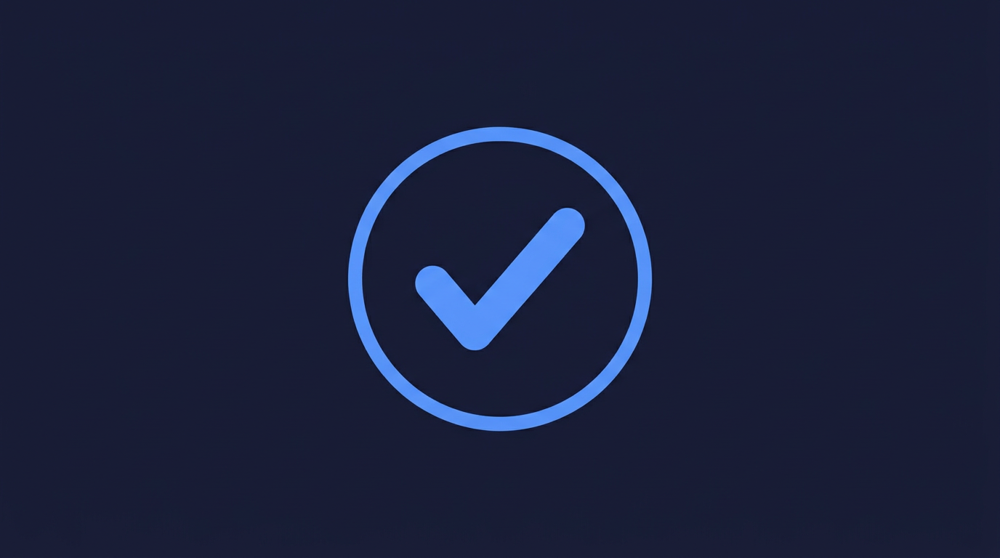
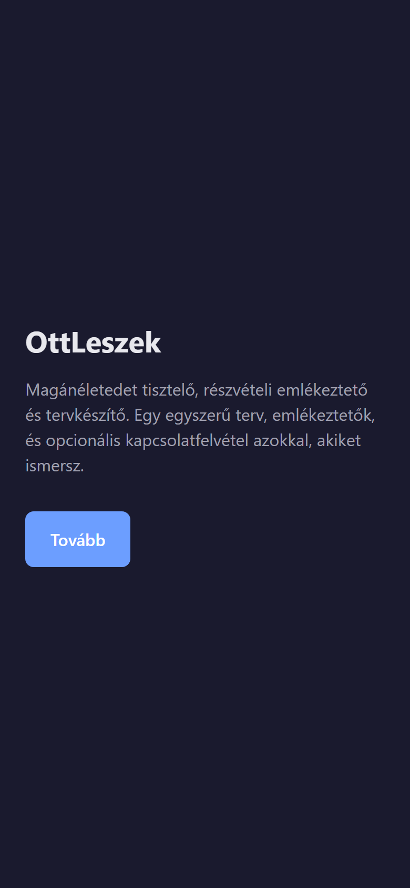
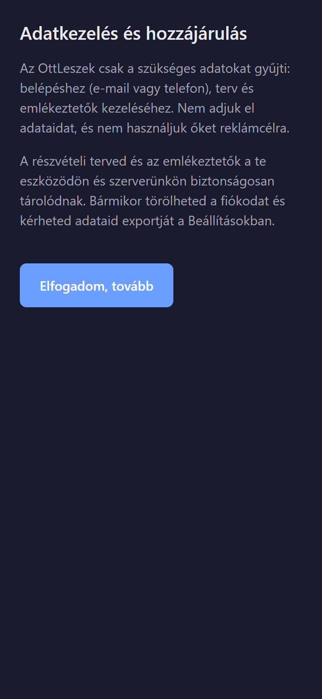
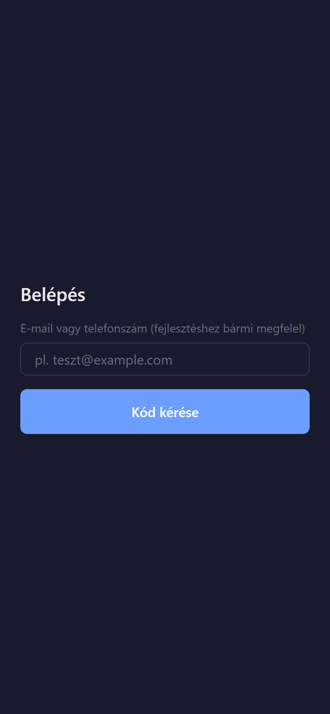
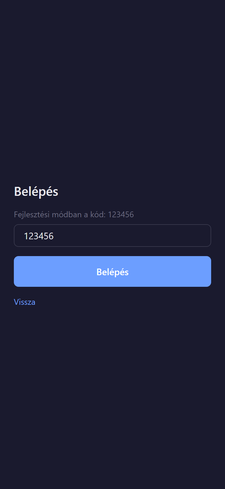
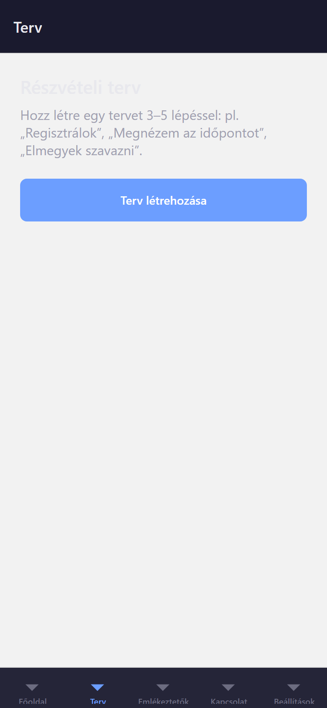
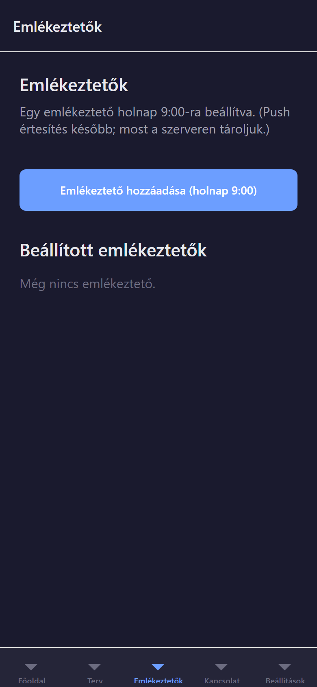
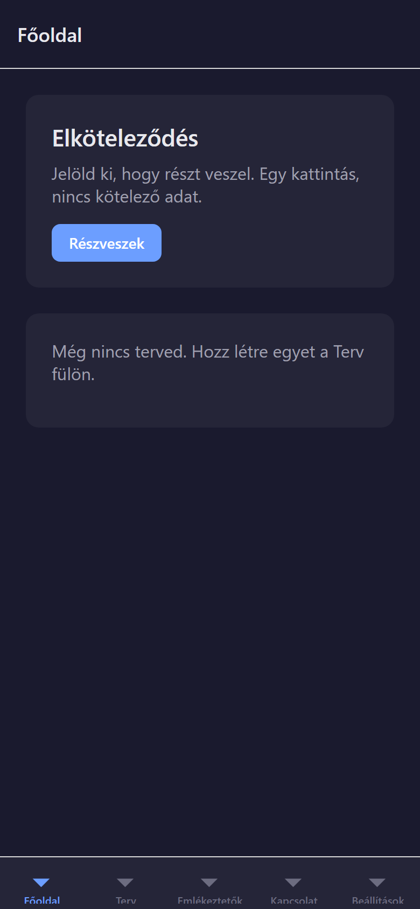
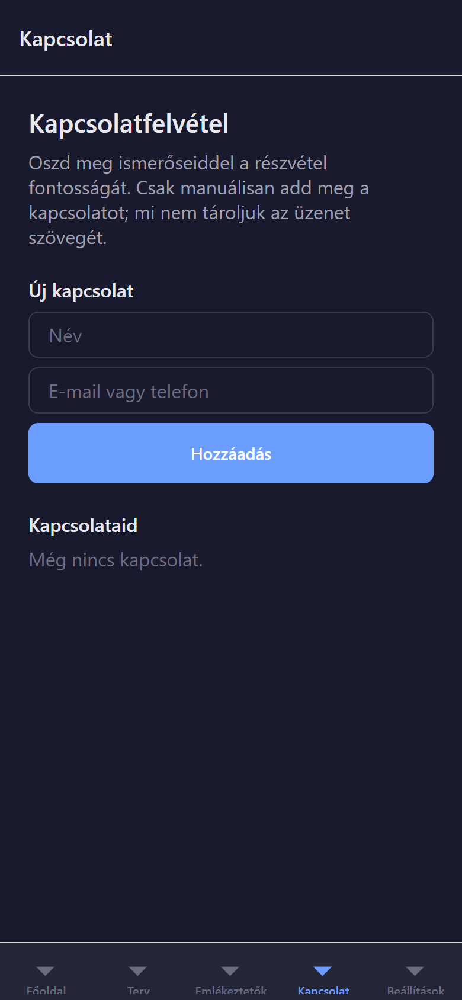
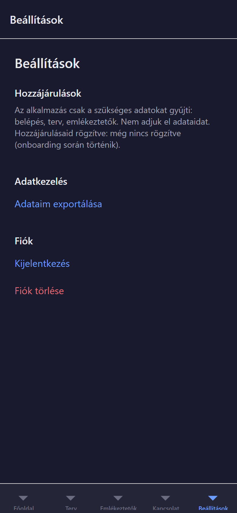

OttLeszek – Alkalmazás bemutató és használati útmutató

OttLeszek egy magánéletet tisztelő, törvényes részvételi (pl. szavazási) emlékeztető és tervkészítő alkalmazás. Segít elköteleződni, egyszerű tervet készíteni, emlékeztetőket kapni, és opcionálisan ismerőseidet is megszólítani – manipuláció és sötét minták nélkül.
1. Tartalomjegyzék
- Mi az OttLeszek?
- Előfeltételek
- Backend és alkalmazás indítása
- Alkalmazás használata – lépésről lépésre
- Gyors tippek és hibaelhárítás
2. Mi az OttLeszek?
Az alkalmazás célja, hogy:
- egy kattintással elköteleződj a részvétel mellett;
- 3–5 lépésből álló egyszerű tervet készíts (pl. „Regisztrálok”, „Elmegyek szavazni”);
- emlékeztetőket állíts be (pl. holnap 9:00);
- a főoldalon lásd a tervet és a checklistet, és jelöld késznek a lépéseket;
- opcionálisan adj hozzá kapcsolatokat, és küldj nekik sablon üzenetet;
- a Beállításokban kezeld a hozzájárulásokat, az értesítéseket, és töröld vagy exportáld az adataidat.
Az app adatvédelmi szempontból minimalista: csak a szükséges adatokat gyűjti, és bármikor törölheted a fiókodat vagy kérheted adataid exportját.
3. Előfeltételek
- Node.js 20 vagy újabb
- pnpm (telepítés:
npm install -g pnpm)
- Opcionális: Expo Go a telefonon, vagy iOS/Android szimulátor
4. Backend és alkalmazás indítása
4.1 Backend (szerver) indítása
- Nyiss egy terminált, és menj a projekt
apps/backend mappájába.
- Másold a példa környezeti fájlt:
copy .env.example .env (Windows) vagy cp .env.example .env (Mac/Linux).
- Futtasd:
pnpm run db:generate, majd pnpm run dev.
- Ha minden rendben, a backend a http://localhost:3000 címen fut. Böngészőben nyisd meg:
http://localhost:3000/health – a válasznak „status”: „ok”-t kell tartalmaznia.
4.2 Mobil alkalmazás indítása
- Nyiss egy második terminált, és menj az
apps/mobile mappába.
- Futtasd:
pnpm run dev.
- Megjelenik egy QR kód. iOS-en: nyisd meg a Kamerát és scanneld. Androidon: nyisd meg az Expo Go appot és scanneld a QR kódot. Vagy nyomd meg az i billentyűt (iOS szimulátor) vagy az a billentyűt (Android emulátor).
Android emulátor vagy valódi telefon: a mobil appnak a gépedre kell csatlakoznia. Android emulátornál indítsd így: set EXPO_PUBLIC_API_URL=http://10.0.2.2:3000 majd pnpm run dev. Valódi telefonnál a géped IP-címét használd (pl. http://192.168.1.100:3000), és mindkét eszköz legyen ugyanazon a Wi‑Fin.
5. Alkalmazás használata – lépésről lépésre
5.1 Üdvözlő és adatkezelés
- Az app megnyitása után az üdvözlő képernyő jelenik meg, ahol röviden bemutatkozik az OttLeszek.

- Kattints a Tovább gombra.
- Az Adatkezelés és hozzájárulás szöveg elolvasása után kattints az Elfogadom, tovább gombra.

5.2 Belépés
- Add meg az e-mail címed vagy telefonszámodat (teszteléshez bármi megfelel, pl.
teszt@example.com).
- Kattints a Kód kérése gombra.
- Fejlesztői módban a kód mindig: 123456. Add meg, majd kattints a Belépés gombra.

5.3 Főoldal – Elköteleződés
- A főoldalon megjelenik az Elköteleződés blokk. Kattints a Részveszek gombra.
- Ezzel rögzíted, hogy részt veszel. A sikeres rögzítés után a „✓ Elköteleződtél” üzenet jelenik meg.

5.4 Terv létrehozása és lépések
- Válaszd a Terv fület (alsó menü).
- Ha még nincs terved, kattints a Terv létrehozása gombra.
- Add hozzá 3–5 lépést (pl. „Regisztrálok”, „Megnézem az időpontot”, „Elmegyek szavazni”). Minden lépésnél írd be a címet, majd kattints a Lépés hozzáadása gombra.

5.5 Emlékeztető beállítása
- Válaszd az Emlékeztetők fület.
- Kattints az Emlékeztető hozzáadása (holnap 9:00) gombra. Egy emlékeztető holnap 9:00-ra kerül beállításra, és megjelenik a listában.

5.6 Checklist – lépés készre jelölése
- Menj vissza a Főoldalra. Itt láthatod a tervet és a lépéseket.
- Ha egy lépést megcsináltál, kattints rá – pipa jelölje meg (✓), és a szöveg átválik „kész” megjelenésre.

5.7 Kapcsolatfelvétel (opcionális)
- Válaszd a Kapcsolat fület.
- Add meg egy ismerős nevét és elérhetőségét (e-mail vagy telefon), majd kattints a Hozzáadás gombra.
- A listában megjelenik a kapcsolat. Az Emlékeztető gombbal sablon üzenetet „küldhetsz” (a rendszer rögzíti a küldést; a későbbi verzióban lehet valódi értesítés).

5.8 Beállítások
- Válaszd a Beállítások fület.
- Itt láthatod a hozzájárulások rövid összefoglalóját, beállíthatod az értesítéseket (push / alkalmazás belül), exportálhatod az adataidat, kijelentkezhetsz vagy törölheted a fiókodat.

6. Gyors tippek és hibaelhárítás
| Probléma |
Megoldás |
| „Network request failed” az appban |
Állítsd be az API címet: Android emulátornál EXPO_PUBLIC_API_URL=http://10.0.2.2:3000, valódi telefonnál a géped IP-címe (pl. http://192.168.1.100:3000). |
| Backend fut-e? |
Böngészőben nyisd meg: http://localhost:3000/health – „status”: „ok” kell legyen. |
| Belépési kód |
Fejlesztői módban mindig 123456. |
Dokumentum: OttLeszek alkalmazás bemutató és használati útmutató. A képernyőképek helyeit a Wordben cseréld ki saját screenshotokra, ha szeretnéd.